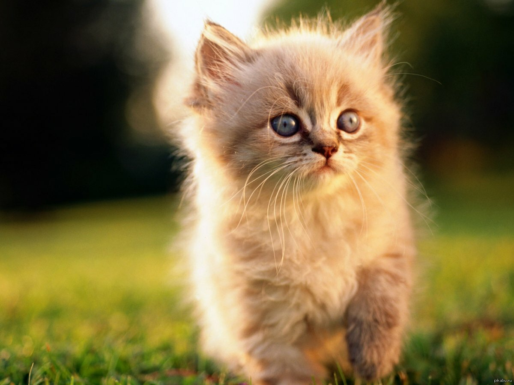

Питомник "Венец Славы" предлагает чистокровных британских
котят с шоколадным геном редкого окраса черное и голубое
золото и эксклюзивного окраса шоколадное золото, с зелеными
глазками линии "Шоколадный Бутик" от кота из Германии.
Котята ко всему приучены, привиты по возрасту, с отличным
костяком, на мощных коротких лапках, с великолепной
плюшевой шубкой, большой круглой головой и маленькими
ушками. С первых дней жизни котята окружены любовью и
заботой, очень ласковые, игривые, смышленые. Фото можно
увидеть на сайте питомника на странице "Котята на продажу".
Цена зависит от окраса, качества и цели приобретения
котенка.
Кошечки лилипуты в три раза мельче своих собратьев они
настолько уникальны
и такой же необычный характер имеют - их у нас две.
Можете купит обоих мама и доч все остальные крупные.
Увидите наглядно при посещении.
Сибирский котик ждёт хозяев. Из питомника традиционных
сибиряков ( без колорного гена) Родители выставочные. Имеют
титулы и награды. Полностью привит. Обучен всем кошачьим
наукам: туалет отлично, питается разнообразной пищей, ночью
спит. Хороший характер: энергичный, веселый, любит сидеть
на руках.

Отдаём в добрые руки прелестных котят, две девочки, ручные
и очень игривые. Родились 29 января. Существует поверье,
что трехцветные кошки приносят удачу и процветание в дом.
Многие заводят таких животных в качестве талисмана. Самые
ценные из них – кошки белого окраса с черным и рыжим.

Предлагаем клубных котят от питомника "Голден трюфель",
котики и кошечки разных окрасов. Приучены к лотку и
когтеточке, привиты, чирированны. Возможны доставки в
регионы и за границу.

В питомнике предлагается и не спеша потихонечку начинает
искать ручки самые любящие мам и пап! Кошечка Фэнтези
выведенная из разведения! Стерилизована! Возраст 1.8 мес
год. Роскошная девочка в окрасе голубокремовая черепашка с
огромными кистями. шикарным хвостом! в супер отличном
красивом типе! ласковая общительная! ко всему приучена!
туалет и когтеточка на отлично! не однократно учавствовала
в выставках занимала бесты лучшие первые места среди кошек!
Девочка лучших голубых кровей известных питомников! Любит
играть, общение. детей! Истинная леди! Договор! паспорт!
Прививки в наличии! Возможна доставка в любую точку мира!
Доступны также вотцап вайбер

Котятки (2,5 месяца) серебристой шиншиллы, очень умненькой,
послушной и дружелюбной кошечки. Рождаются темными, по мере
взросления нарастает белый подшерсток и становятся белыми
как бы накрытыми черной вуалькой, глазки, носик и ротик
обведены черным, пальчики на лапках тоже черненькие.
Игривые, мурчалки, чистоплотные, приучены к лотку. Едят
сухой корм Роял Канин и мокрый - Шебу, Гурме. Выросли в
любви и ласке. Только в ответственную семью, всерьез
решившую завести верного и любящего котейку.

Прекрасная шотландская вислоухая малышка ждёт свою семью!
Девочка Приучена к лотку, кушает сухой и влажный корм. При
желании за отдельную плату на котят оформляется метрика,
подтверждающая происхождение и породность. Фото родителей
могу предоставить, отец Красный мраморный кот, мать
полностью Черная вислоухая кошка.

Прекрасная шотландская вислоухая малышка ждёт свою семью!
Девочка Приучена к лотку, кушает сухой и влажный корм. При
желании за отдельную плату на котят оформляется метрика,
подтверждающая происхождение и породность. Фото родителей
могу предоставить, отец Красный мраморный кот, мать
полностью Черная вислоухая кошка.
Кот Сугробик, очень ждет своего человека! Бездомного
мальчика сбила машина, сделана операция на тазу и лапке,
кастрирован. Операция прошла успешно - мальчик отлично
ходит! Очень робкий и застенчивый, любит когда его гладят и
разговаривают с ним. Лоток на отлично. Побаивается других
животных. Привыкает быть домашним и любимым. Сугробику
около 5ти лет, окрас - коровка, 2 круглых ровных кружочка
на спинке ) Ждет в гости, знакомиться ! : )

Классическая персидская кошечка окраса голубая шиншилла,
ждет своего хозяина. Выращена в семье, ласковая и
самостоятельна, приучена к горшочку